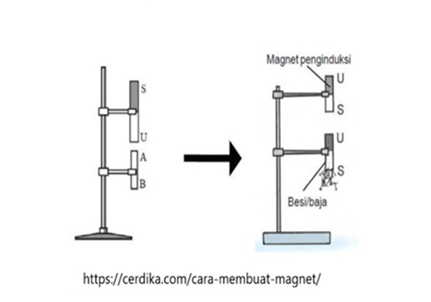
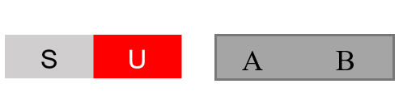

b. Cara Membuat Magnet
Ada tiga cara yang dapat digunakan untuk membuat magnet yaitu, dengan cara induksi, menggosokkan, elektromagnetik.
1. Cara Induksi

Membuat magnet dengan cara menginduksi artinya mendekatkan atau menempelkan suatu benda dengan magnet sehingga benda tersebut berubah menjadi magnet, namun sifat kemagnetan ini hanya berlangsung sementara. Jika benda dilepaskan dari magnet, sifat kemagnetannya akan hilang.

Mari Mengamati
Pada video berikut ini kita akan melakukan percobaan membuat magnet dengan cara induksi, menggosok, dan elektromagnetik.
1. Amatilah peristiwa yang terjadi pada paku pertama dan paku kedua pada cara induksi.
2. Amatilah apakah arah lilitan pada paku berpengaruh pada cara elektromagnetik.
3. Amatilah bagaimana pengaruh arah gosokan magnet pada paku dan kutub yang terbentuk.
Video 4. Membuat magnet
Navigasi Video :
1. Amatilah peristiwa yang terjadi pada paku pertama dan paku kedua pada cara induksi.
2. Amatilah apakah arah lilitan pada paku berpengaruh pada cara elektromagnetik.
3. Amatilah bagaimana pengaruh arah gosokan magnet pada paku dan kutub yang terbentuk.
Video 4. Membuat magnet
| Pertanyaan | Jawaban |
|---|---|
| (Cara Induksi) Apakah paku pertama yang terinduksi dapat menarik paku kedua. | |
| (Cara elektromagnetik) Apakah pola lilitan pada paku berpengaruh pada kutub magnet yang terbentuk. | |
| (Cara Digosok) Apakah Arah gosokan berpengaruh terhadap paku dan kutub magnet yang terbentuk |


Mari Mencoba
Petunjuk :
- Soal berjumlah tiga yang terdiri dari gambar dan dua pilihan jawaban.
- Soal berikutnya akan muncul setelah menjawab soal dengan benar.
- Pada saat jawaban dipilih, hasil benar atau salah akan langsung terlihat.
Bila sebuah besi didekatkan dengan magnet seperti cara induksi seperti gambar berikut, yang manakah kutub utara dan selatan dari besi tersebut ….


Kesimpulan